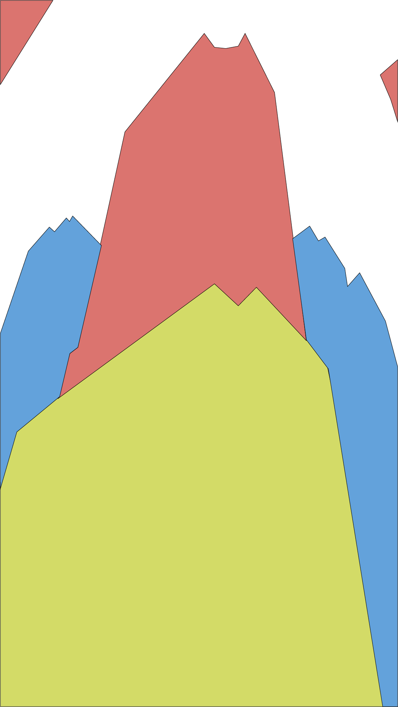

| original image | edit image |
|---|---|
|
|

|
I took a photo of this building because it looks very tall, and the slanted window in the middle. Also, I feel like finding different layers of a building in the foreground and middle ground, and background. It is easier to see because you can see it, and when you do, enveirmnet is hard to tell if the tree belongs in the foreground or background. Also building has an angle, so it more easier to draw a line on the layer, unlike drawing a tree, which is hard to cover all of the pieces of the tree.